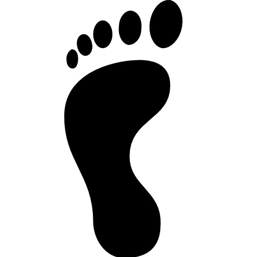

Looking for a highly entertaining, informative and inspiring event for your team, colleagues or students? Public Speaking Walk gives you insights in the art of public speaking while seeing the beauty of Rotterdam. Op zoek naar een vermakelijk, informatief en inspirerend evenement voor uw team, collega's of studenten? Public Speaking Walk geeft je inzicht in de kunst van public speaking terwijl je Rotterdam op zijn mooist ervaart.
Public Speaking x Rotterdam
I, Mewis Breij, will guide you through Rotterdam in 2-3 hours. I will tell the story of Rotterdam, but I will mainly speak about speaking. I will use these Rotterdam stories to put public speaking lessons into practice. In this fun event you will gain perspective into what’s out there to learn when it comes to public speaking. Ik, Mewis Breij, loods je in 2-3 uur door Rotterdam. Ik zal het verhaal van Rotterdam vertellen, maar ik zal vooral spreken over spreken. Deze Rotterdamse verhalen gebruik ik om de spreeklessen in de praktijk te brengen. In dit vermakelijke evenement krijg je inzicht in wat er te leren valt als het gaat om spreken in het openbaar.
Why Public Speaking Walk? Waarom Public Speaking Walk?

Public Speaking Walk exists to show you the countless ways to speak with more impact. This event inspires you to zoom in more often on how to tell instead of only on what to tell. Ideas are only as good as the actions that follow the communication of these ideas. And as a good speaker understands: Inspiration and entertainment should walk together. Surroundings matter. That’s why the dynamic city of Rotterdam is our décor. Public Speaking Walk bestaat om je de talloze manieren te laten zien om met meer impact te spreken. Dit evenement inspireert je om vaker te focussen op overtuigend overdragen in plaats van alleen op de inhoud. Ideeën zijn slechts zo goed als de acties die voortvloeien uit de communicatie van deze ideeën. En zoals een goede spreker begrijpt: Inspiratie en entertainment horen samen te gaan. Omgeving telt. Daarom is de dynamische stad Rotterdam ons decor.
Mewis Breij
Passionate Speaker, Speaking coach, guide.
Mewis Breij
Gepassioneerde spreker, Coach, gids.
Not long after I figured out I loved learning and reading, I fell on my head. I acquired a brain injury, only a few months after I started studying. My life slowed down, but my self-development journey got up to fifth gear. I loved reading and writing, but my eyes were weak. I listened to hundreds of books, hundreds of podcasts and even more TED Talks. I inadvertently developed a passion for speaking. I have been studying and practicing by giving tours and lectures to thousands of people. The purpose of the Public Speaking Walk is to invoke some of my passion in you. Ik had net ontdekt hoeveel ik van leren en lezen houdt, wanneer ik op m’n hoofd viel. Ik kreeg de diagnose niet-aangeboren hersenletsel. Mijn leven vertraagde, maar mijn zelfontwikkeling bereikte de hoogste versnelling. Ik hou van lezen en schrijven, maar mijn ogen konden niet veel aan. Ik luisterde naar honderden boeken, honderden podcasts en honderden TED talks. Zo ontwikkelde ik de afgelopen jaren een passie voor spreken. Ik heb gestudeerd en geoefend aan de hand van het geven van honderden tours en colleges. Het doel van Public Speaking Walk is om wat van mijn passie aan te wakkeren bij jou.